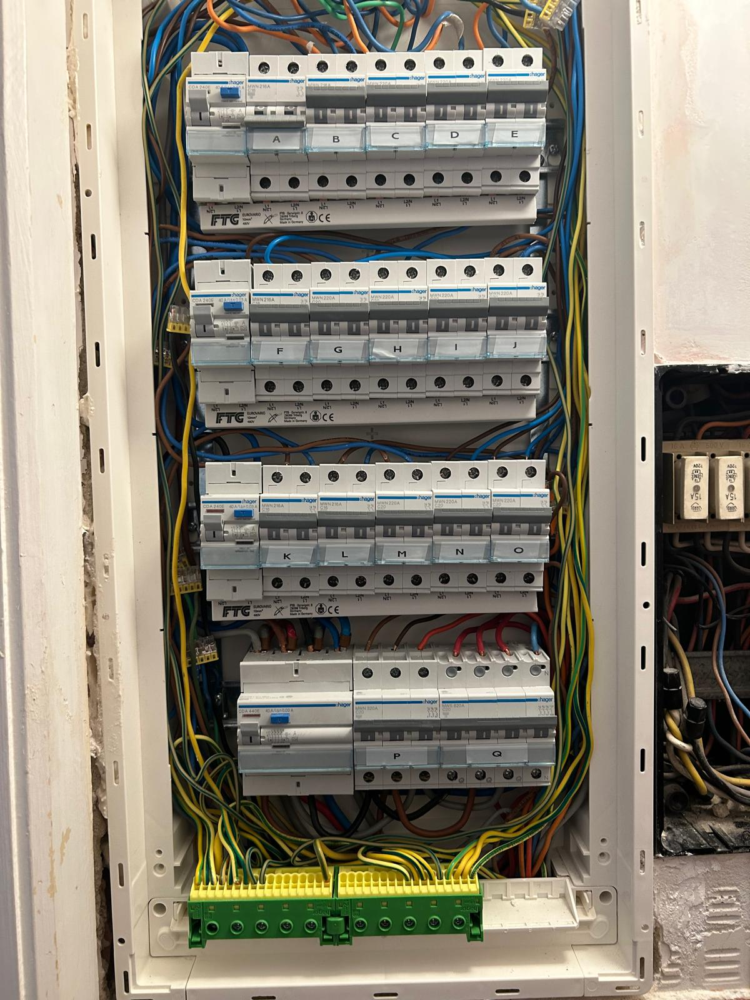
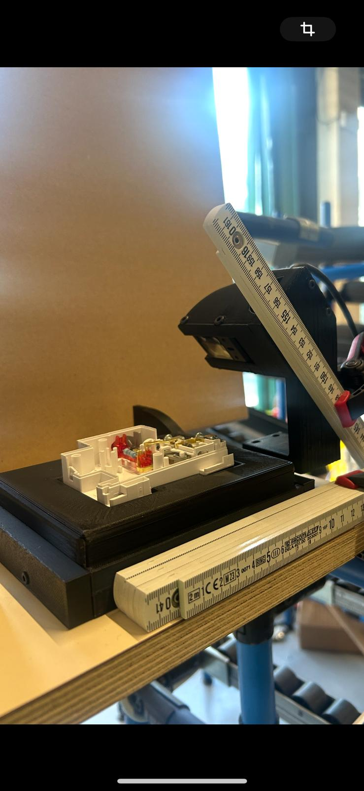
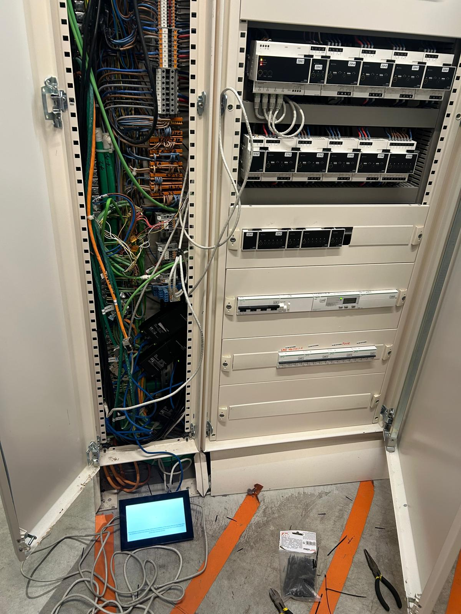
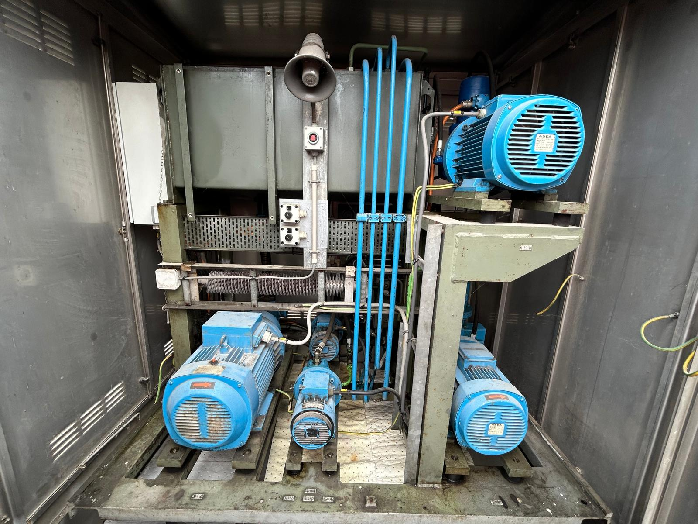
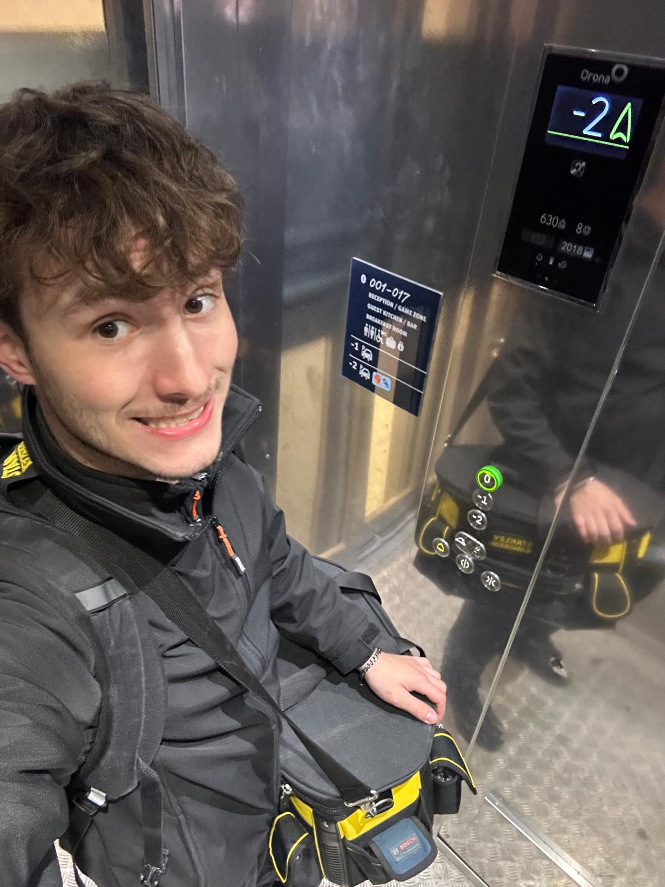
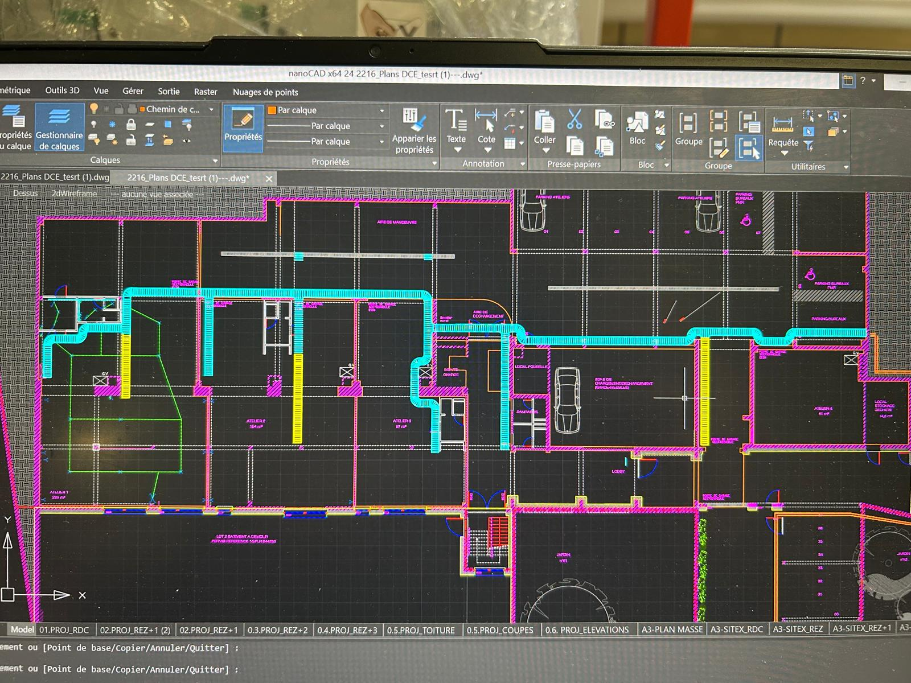
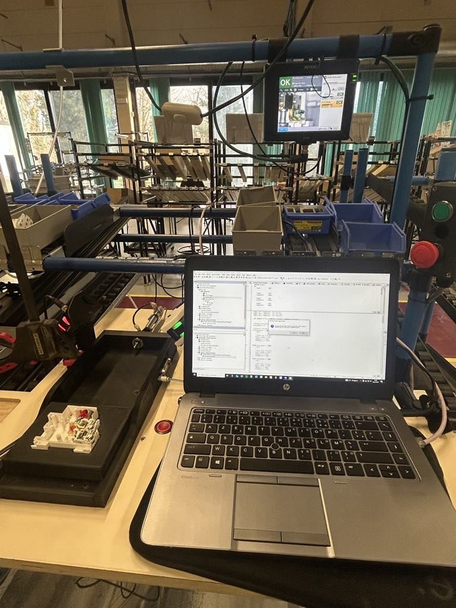

Electromécanicien – Passionné de technologie
Bienvenue sur mon portfolio. Vous trouverez ici une sélection de mes projets, mes compétences, et comment me contacter.







Une démonstration vidéo d'un projet dynamique avec animations. Il met en avant ma capacité à créer une interface moderne et intuitive.
Développement d'une application web responsive avec HTML, CSS, JavaScript. Intégration de formulaires, de bases de données, et déploiement sur serveur.
Création d’une interface fluide pour un tableau de bord de monitoring, utilisant des composants modernes et animations au scroll.